Until this review the repository had no automated tests. For DA3 a four-level test suite was built around the
backend's existing layered structure (routes → controllers → services → domain models → infrastructure adapters),
plus a frontend unit suite. All suites run with one command per level and in CI on every push.
10regression snapshots (API contract + golden master)
Level
Tool
What it exercises
Tests
Command
Unit
Jest + ts-jest
Task, BacklogItem, SmartBacklogService, SprintRiskService, RssParser, AtomParser, FeedParserFactory, CacheService fallback, JWT middleware — each in isolation, network stubbed.
74
npm run test:unit
Integration
Jest + supertest
The real Express app end-to-end through router, controllers, services and models. Only Layer-5 adapters (Prisma, Redis, outbound HTTP) are replaced by in-memory fakes.
23
npm run test:integration
Regression
Jest snapshots
Status code + response shape of every endpoint, the ranking of the seed backlog (golden master), and previously-identified edge cases.
14
npm run test:regression
Mutation
Stryker Mutator
Injects 489 small faults into models, services, parsers, middleware and controllers and checks that the suite above detects each one.
489 mutants
npm run test:mutation
Frontend unit
Vitest
OPML 2.0 export: envelope, one outline per feed, category default, XML escaping of all five special characters.
5
npm test (frontend)
1.1 Unit testing
Unit tests pin the business rules that the rest of the system depends on: the default values of a
Task, the MoSCoW weight table, the exact Smart Backlog scoring formula, the severity classification and
risk thresholds of the Sprint Risk service, and the normalisation each parser performs. The RSS client is replaced by a
shared stub so no test touches the network.
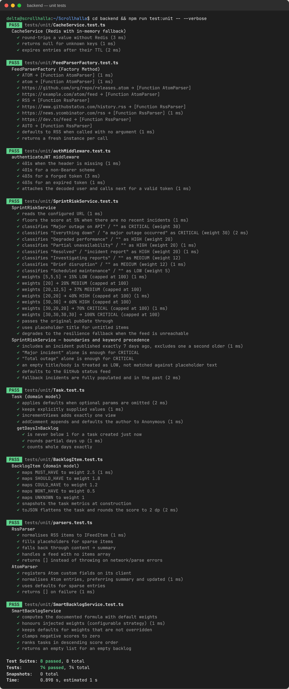
Figure 1 — Unit suite: 74 tests across 8 suites, all passing.
1.2 Integration testing
The integration suite drives the real application over HTTP with supertest. The composition root in
routes/api.ts is left untouched, so the test also verifies that dependency injection wires the controllers
correctly — for instance, that a task created through /api/tasks is visible to the Smart Backlog and Team
controllers, which share the same TaskController instance. Five integration scenarios are covered:
Task CRUD flow — create, read (view counter increments), update, comment, delete, and 404 on every verb afterwards.
Cross-controller — a high-engagement task rises to the top of /api/smart-backlog; reassignment changes team workload.
Feed pipeline — cold cache triggers on-demand harvest through Factory → Parser → Cache; the second request is a REDIS_CACHE_HIT; one failing publisher does not break the timeline.
Sprint risk — the endpoint degrades to the resilience fallback when the status feed is offline.
Auth flow — register → duplicate refused → login → protected profile with bcrypt and JWT; identical 401 for wrong password and unknown user.
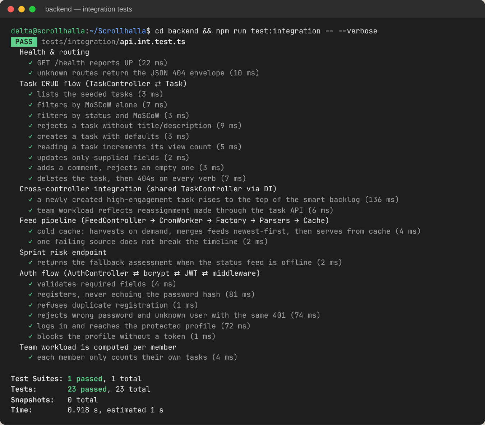
Figure 2 — Integration suite: 23 tests across the full request path.
Listing 1 — Integration tests replace only the infrastructure adapters (backend/tests/integration/api.int.test.ts)
// Integration: real Express app → router → controllers → services → models.
// Only Layer-5 adapters (Prisma, Redis, outbound HTTP) are replaced.
jest.mock('../../src/config/prisma', () => require('../helpers/mockInfra').prismaModuleMock());
jest.mock('../../src/config/redis', () => require('../helpers/mockInfra').cacheModuleMock());
jest.mock('rss-parser', () => require('../helpers/rssParserMock').rssParserModuleMock());
it('cold cache: harvests on demand, merges feeds newest-first, then serves from cache', async () => {
const first = await request(app).get('/api/feed');
expect(first.body).toMatchObject({ success: true, source: 'ON_DEMAND_HARVEST', count: 3 });
const second = await request(app).get('/api/feed');
expect(second.body.source).toBe('REDIS_CACHE_HIT');
expect(parseURL).toHaveBeenCalledTimes(3); // no second harvest
});
1.3 Regression testing
The regression pack protects behaviour that users and the frontend already rely on. REG-01 snapshots the
status code and the shape of every endpoint's response — volatile values such as IDs and timestamps are reduced
to their type so the snapshot only changes when the contract changes. REG-02 is a golden master of the seeded
backlog ranking. REG-03 pins edge cases: the documented storyPoints: 0 → 3 coercion, the 100% cap on
team utilisation, non-enumerating login errors, and malformed JSON being handled by the global error handler.
Listing 2 — Contract snapshot that ignores volatile values (backend/tests/regression/api-contract.reg.test.ts)
/** Replace volatile values (ids, timestamps, latencies) with their type so snapshots are stable. */const shape = (v: any): any => {
if (Array.isArray(v)) return v.length ? [shape(v[0])] : [];
if (v && typeof v === 'object') return Object.fromEntries(Object.keys(v).sort().map(k => [k, shape(v[k])]));
return typeof v;
};
it.each([['GET', '/health'], ['GET', '/api/tasks'], ['GET', '/api/smart-backlog'], /* … 9 endpoints */])('%s %s', async (_m, url) => {
const r = await request(app).get(url);
expect({ status: r.status, body: shape(r.body) }).toMatchSnapshot();
});
1.4 Coverage
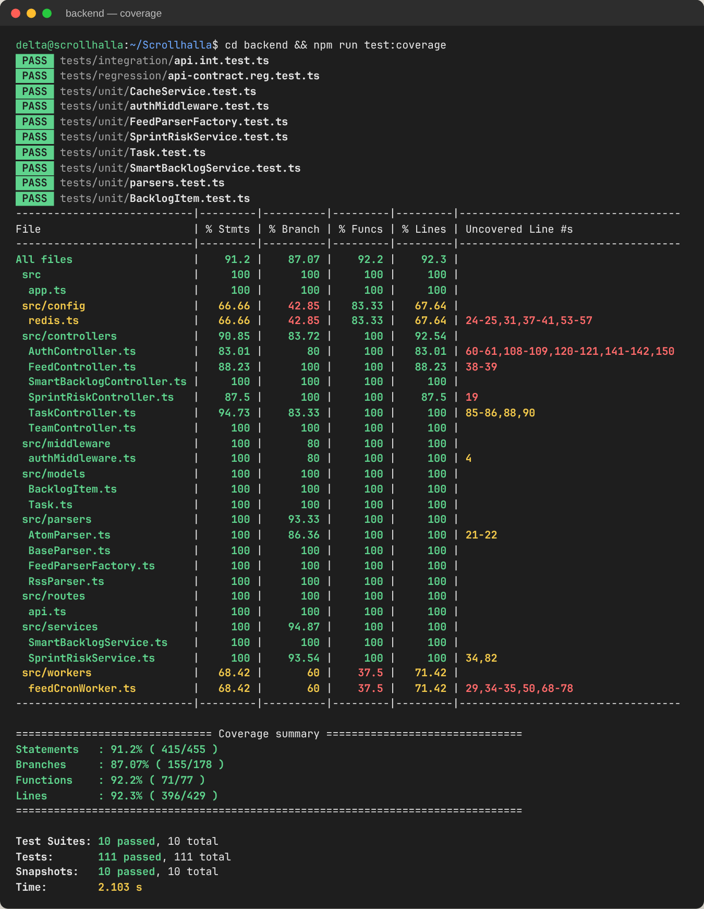
Figure 4 — Istanbul coverage across all backend source files.
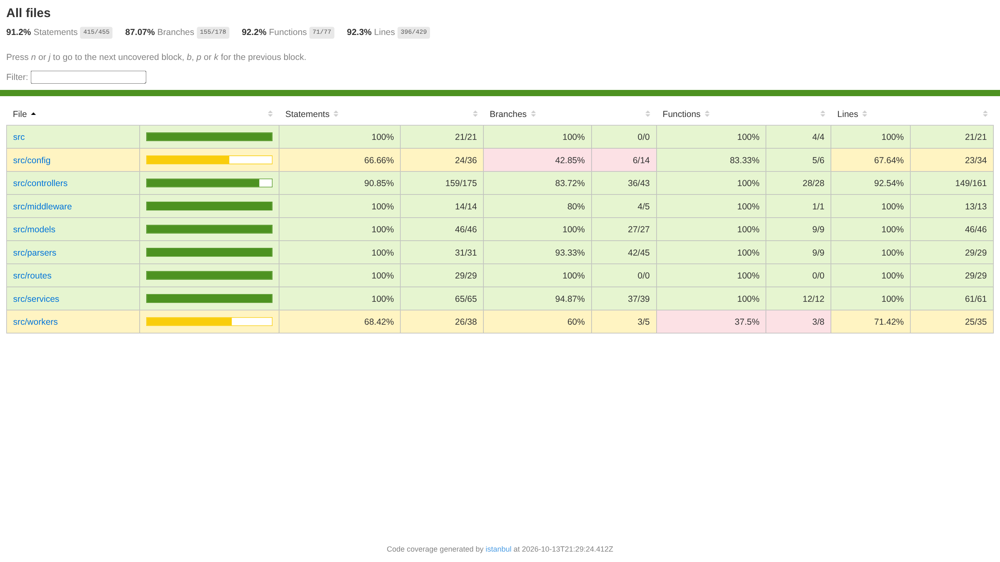
Figure 5 — HTML coverage report (uploaded as a CI artifact on every run).
1.5 Mutation testing
Line coverage only shows that code ran; it does not show that a test would fail if the code were wrong.
Stryker answers that question by generating mutants — >= turned into >, || into
&&, a string emptied, a branch forced to true — and re-running the suite against each one.
A mutant that no test notices survives and marks a weak spot.
Remaining survivors are equivalent mutants, meaning changes that cannot alter observable behaviour, so no test can kill them. Examples:
status || TaskStatus.TO_DO in the controller (the Task constructor applies the same default);
item.pubDate || new Date() (items without a date are already filtered out above); the unused
parserName field; and log-message strings. They are documented here rather than suppressed.
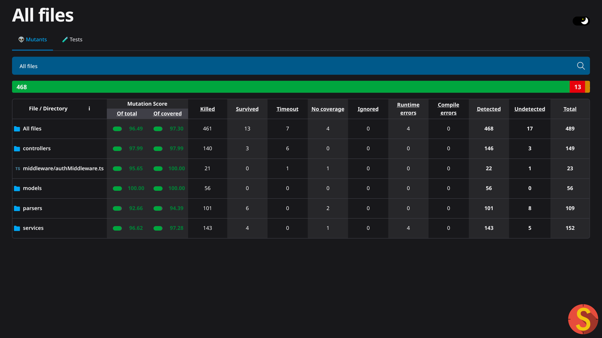
Figure 8 — Stryker HTML report (CI artifact).
1.6 Frontend tests
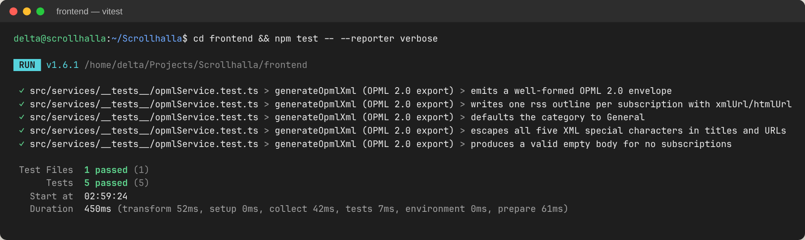
Figure 9 — Vitest suite for the OPML 2.0 export service.
2. Version Management and System Building
2.1 Branching strategy
The project follows GitHub Flow, as set up in DA1: main holds the stable, deployable version and every unit of work
lives on a feature/* branch merged through a pull request. Each review has its own branch
(feature/da2-design, feature/da3-testing) next to the functional branches
(feature/onboarding-rss-enhancements, feature/opml-feed-exporter). Commits use the
Conventional Commits prefixes feat, fix, test, refactor,
docs and ci, so the history reads as a changelog. Releases are marked with semantic-version tags.
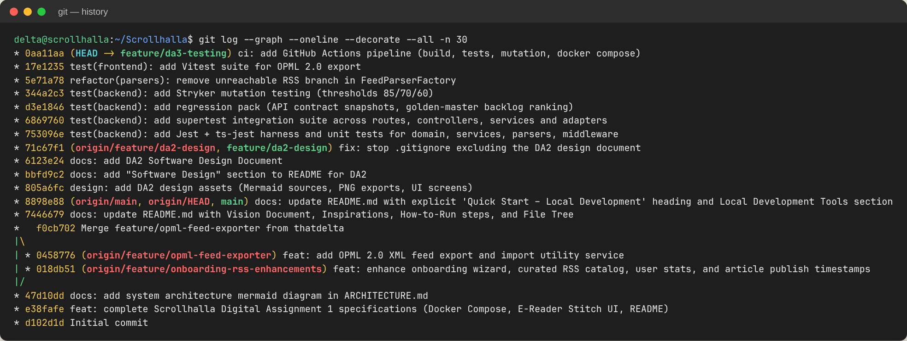
Figure 10 — Commit graph: feature branches merged into main; DA3 work as small, single-purpose commits.
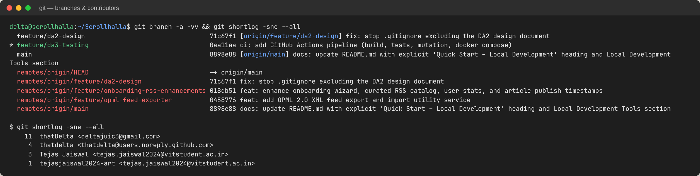
Figure 11 — Local and remote branches with upstream tracking, and contributors.
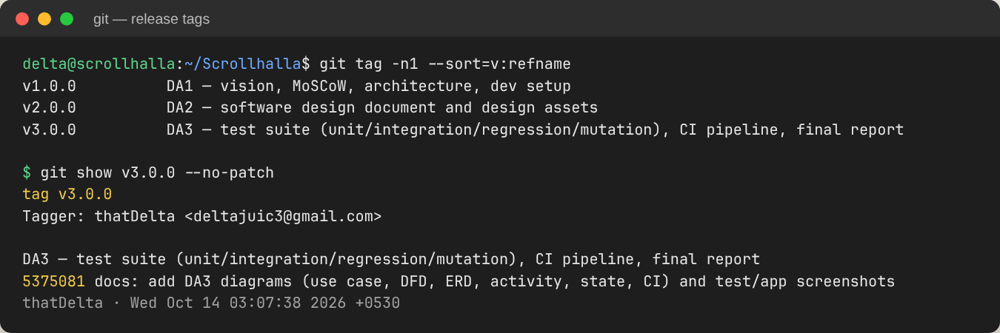
Figure 12 — Annotated release tags, one per review milestone.
2.2 System building
The system is built at three levels, and each one is reproducible from a clean checkout:
Component builds. The backend runs npm run build, which is prisma generate followed by tsc, the type-check gate. The frontend runs npm run build, which is a Vite production bundle of 215 kB (65 kB gzip).
Container images. The backend uses a multi-stage Dockerfile, with a build stage and a slim runtime stage on node:20-alpine. The frontend Vite bundle is served by Nginx, which also reverse-proxies /api.
System composition.docker compose up --build starts four services: postgres:15, redis:7, the backend and the frontend. They share one network, and health-checked dependencies control the start order.
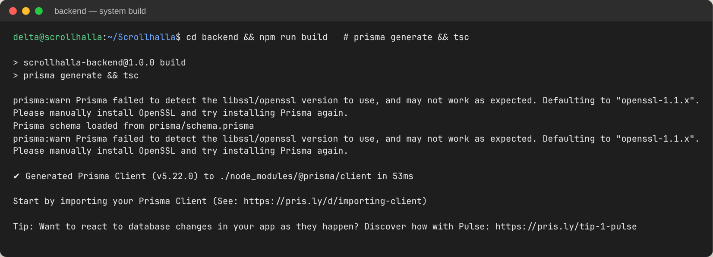
Figure 13 — Backend build (Prisma client + tsc).
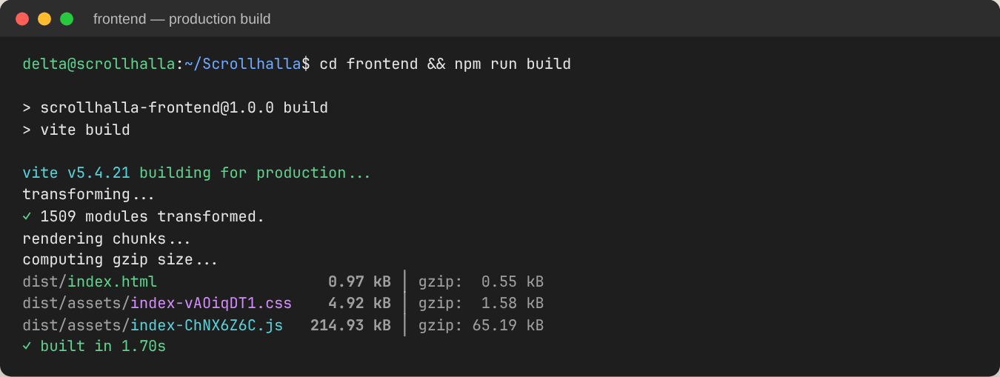
Figure 14 — Frontend production build.
2.3 Continuous integration
A GitHub Actions workflow (.github/workflows/ci.yml) runs on every push to main and feature/**, on every pull request and on every v* tag. It has four jobs:
backend builds the code, then runs the unit, integration and regression tests and coverage.
mutation runs Stryker after the backend job and fails the pipeline if the score falls below 60%.
frontend runs the Vitest tests and the production build in parallel with the backend job.
docker builds the whole compose stack once both the backend and frontend jobs pass.
The coverage report, the mutation report and the frontend dist/ are uploaded as artifacts.
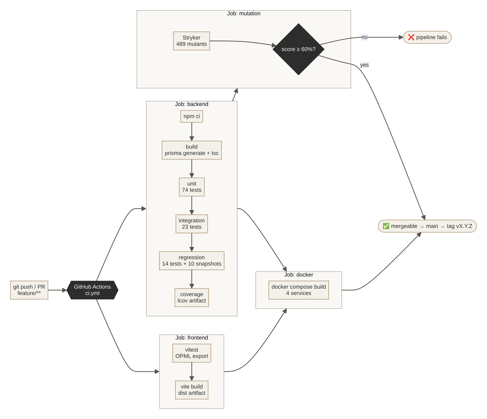
Figure 15 — CI pipeline: build → test levels → mutation gate → system build.
Listing 3 — Backend job of the CI pipeline (.github/workflows/ci.yml, excerpt)
All screenshots below come from the running system. The Vite frontend talks to the Express backend, which uses real
PostgreSQL and Redis instances, and the articles shown are live items harvested from the DEV Community and Hacker News RSS
feeds at the time of capture.
Figure 21 — Saved articles: bookmarked from the timeline, searchable, removable (US #9, #24).
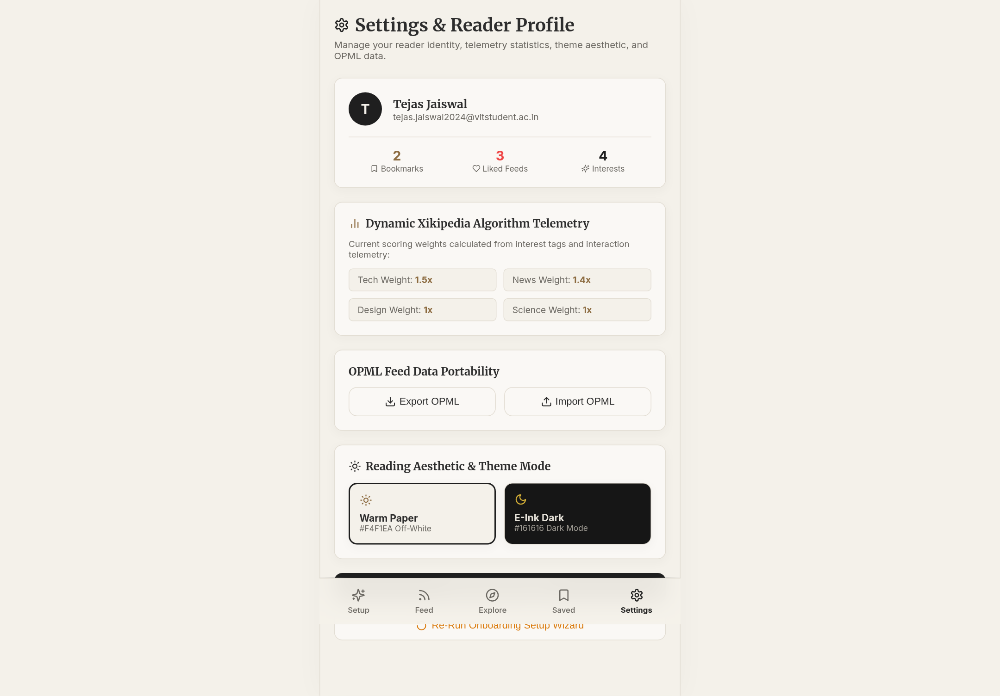
Figure 22 — Settings: reader profile, algorithm weights, OPML export/import, Warm Paper / E-Ink Dark theme (US #5).
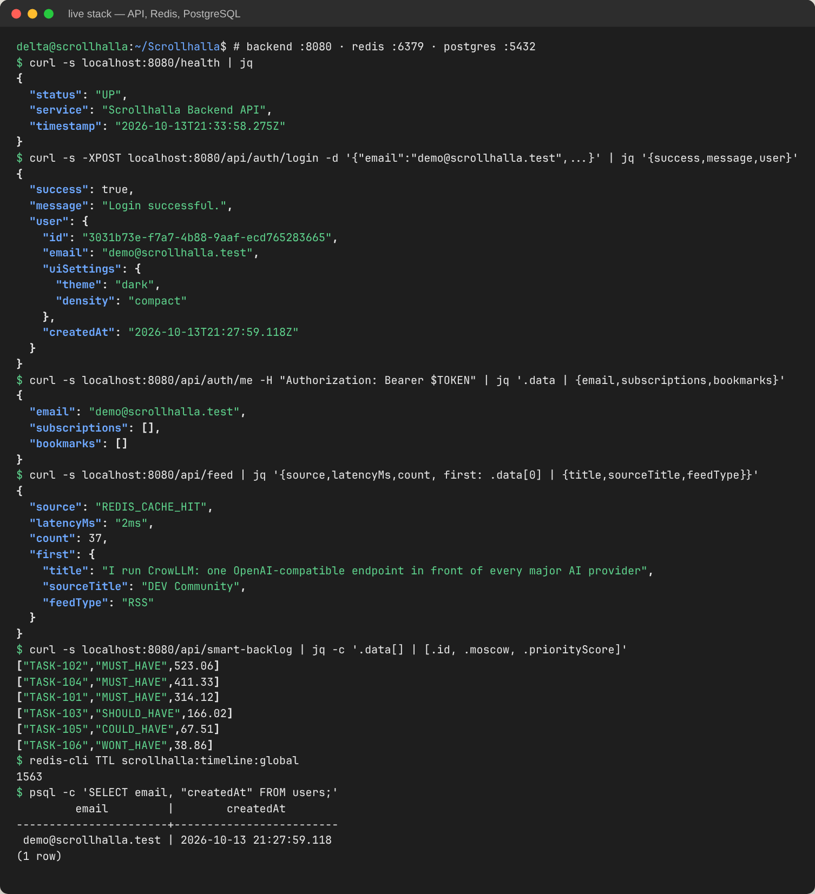
Figure 23 — Backend functionality on the live stack. Health check; login with bcrypt and JWT against PostgreSQL; protected profile; timeline served as REDIS_CACHE_HIT in 2 ms; Smart Backlog ranking; Redis TTL; user row in PostgreSQL (US #14, #15, #22).
4. Tools and Technologies Used
Area
Tool / technology
Purpose in Scrollhalla
Frontend
React 18, TypeScript, Vite 5, React Router 6, lucide-react
The video demonstrates the developed functionalities of the running system described in Sections 1–3.
6. Problem Statement
Readers face extreme algorithmic noise, cluttered interfaces and information overload in mainstream social
media and news apps. Feeds are ranked by engagement rather than by the reader's intent, and long-form text is
presented in high-contrast, ad-dense layouts that tire the eye. Standard RSS readers solve the control problem but
keep a dated, list-heavy interface that discourages continuous reading.
Scrollhalla is a minimalist, mobile-first RSS/Atom aggregator that combines two things:
the control of RSS, so readers decide which sources they follow;
the frictionless discovery of a vertical, Reels-style scroll.
It presents articles in a calm e-reader aesthetic, with a warm paper background and serif reading text. Feeds are harvested in the background
and cached, so opening the app never waits on third-party servers.
Target users.
The Deep Thinker reads long-form essays, tech blogs and news, and wants a paper-like experience without eye strain.
The Curator is tired of algorithms choosing their feed and wants to subscribe explicitly through tags and lists.
Success criteria.
Feed loads under 500 ms. Measured at 0–2 ms from the Redis cache.
Standard RSS 2.0 and Atom 1.0 feeds parse correctly. Verified by the parser unit tests.
The system deploys with a single command through Docker Compose.
7. User Stories
User stories are tracked as GitHub Issues and on the GitHub Projects Kanban board, as set up in DA1. The
table maps each story to its MoSCoW priority, its implementation status in this release, and the evidence for it: a
test ID from Section 9 or a screenshot.
#
User story
MoSCoW
Status
Evidence
3
As a new user, I want an onboarding screen with interest tags so I can bootstrap my initial feed.
Must
Done
Fig. 16
4
As a user, I want my feed in a vertical, Reels-style scroll so I can move seamlessly between article snippets.
Must
Done
Fig. 17–18
5
As a reader, I want an off-white, paper-like background to reduce eye strain.
Should
Done
Fig. 18, 22
6
As a reader, I want a highly readable serif font for article content.
Should
Done
Fig. 19
7
As a user, I want a “Like” button so the app learns my preferences.
Should
Done
Fig. 18; TC-U-SB
8
As a user, I want a “Save” button on a feed item to read it later.
Should
Done
Fig. 18, 21
9
As a user, I want a Saved/Bookmarks screen listing my saved articles.
Should
Done
Fig. 21
10
As a user, I want an Explore page to discover feeds by topic.
Should
Done
Fig. 20
11
As a user, I want to paste a custom RSS URL on Explore to add a blog.
Should
Done
Fig. 20
12
As a reader, I want to open a snippet in a full-screen “Focus View”.
Should
Done
Fig. 19
13
As a backend system, I want to fetch feeds automatically so content stays fresh.
Must
Done
node-cron every 15 min; TC-I-FEED
14
As a backend system, I want to parse both RSS 2.0 and Atom feeds.
Must
Done
TC-U-PAR, TC-U-FAC
15
As an application, I want to cache parsed feed JSON in Redis for instant load.
Could
Done
TC-I-FEED; Fig. 23
16
As a user, I want to remove a feed from my subscriptions.
Should
Partial
Data model supports it (cascade); no UI yet
17
As a user, I want to adjust the base font size for accessibility.
Could
Done
Fig. 19 (A-/A+)
18
As a user, I want an estimated “Read Time” on each card.
Should
Done
Fig. 17–18
19
As a user, I want to log out securely.
Must
Partial
JWT clear in apiService; no UI button
20
As a user, I want a thumbnail next to the article title.
Could
Open
Deferred
21
As a user, I want a minimalist bottom navigation bar (mobile).
Should
Done
Fig. 17
22
As an Admin, I want to configure PostgreSQL via environment variables.
Must
Done
DATABASE_URL; Fig. 23
23
As a developer, I want to deploy frontend and backend together with Docker Compose.
Must
Done
CI docker job; §2.2
24
As a user, I want an empty state if I have no saved articles.
Could
Done
BookmarksView empty state
25
As a user, I want to share an article link via a “Share” button.
Could
Done
Fig. 18
Summary: 20 of 23 stories are complete, 2 are partial and 1 is deferred. Every Must Have that the reader
sees is complete. The two partial stories are already supported in the backend and data model and need only a UI
control.
8. System Architecture and System Design
8.1 Architectural style
Scrollhalla is a layered (n-tier) architecture. It runs as four containers orchestrated by Docker Compose: an Nginx-served
React SPA, an Express API, PostgreSQL and Redis. A layered style was chosen over microservices because the
deciding constraint is team size, not scale. Two developers would pay the full coordination cost of independent services
and gain nothing, since there is no independent scaling requirement.
One refinement is deliberate: the read path is inverted. A cron worker harvests the external feeds every 15 minutes and
writes a normalised timeline to Redis, so GET /api/feed becomes a single key lookup. Freshness is traded
for latency and for isolation from third-party servers.
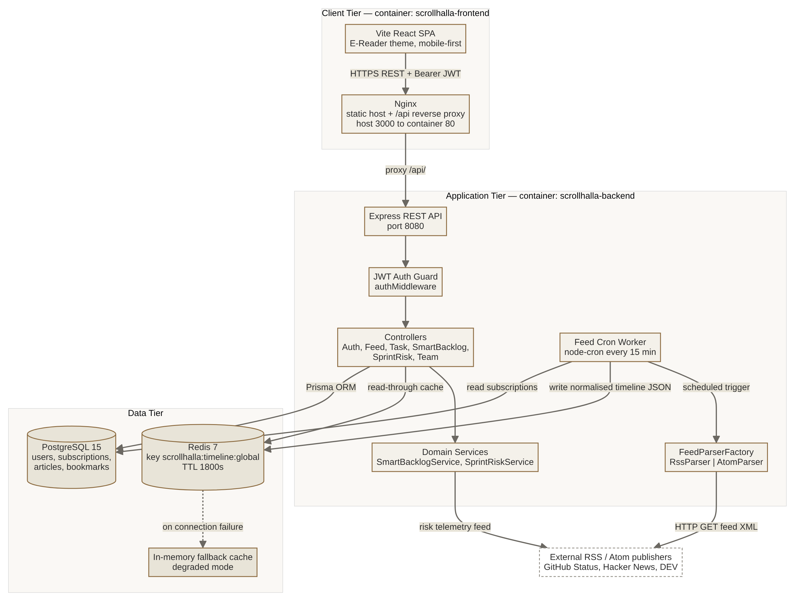
Figure 24 — Architecture and deployment view.
8.2 Design principles and patterns
Abstraction and polymorphism. The abstract BaseParser defines one contract, parse(url): IFeedItem[]. RssParser and AtomParser implement it.
Factory Method.FeedParserFactory keeps object creation out of the callers. DA3's mutation testing simplified it to a single Atom check (§1.5).
Rich domain model.Task.getDaysInBacklog() and BacklogItem.getMoscowWeight() keep behaviour next to the data it uses.
Strategy and configuration.SmartBacklogService takes injectable weights, which the tests exercise directly.
Dependency injection.routes/api.ts is the composition root, and a single TaskController is shared by the Backlog and Team controllers.
Resilience.CacheService falls back to an in-memory store, and SprintRiskService falls back to known telemetry.
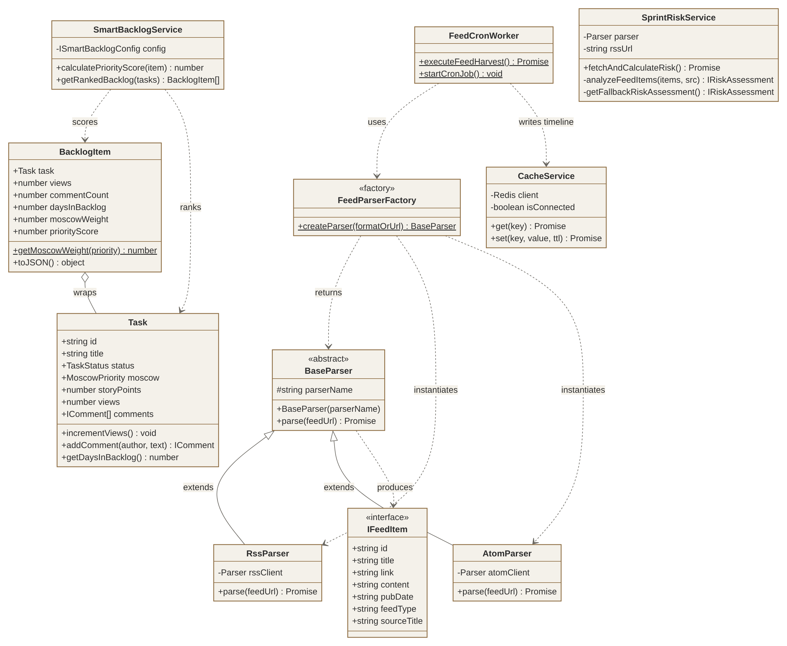
Figure 25 — Class diagram of the backend domain.
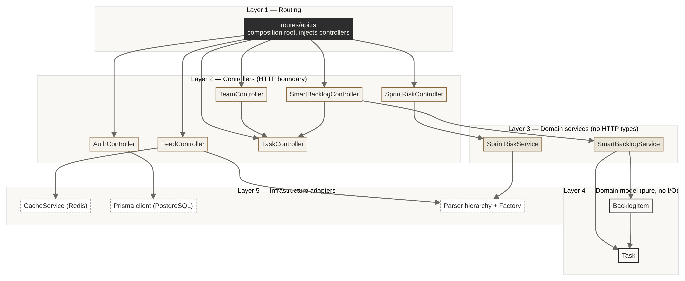
Figure 26 — Five-layer module dependencies. Arrows only point downward.
8.3 Key design decisions
Decision
Why
Cost
Abstract parser behind a factory
A new feed format means one new subclass plus one line in the factory. Callers stay closed to modification.
One extra layer of indirection.
Inverted read path (cron → Redis)
Takes seconds of third-party latency off the request path.
Content can be up to 15 minutes stale.
Cache with in-memory fallback
If Redis is down, performance degrades but the product still works.
Fallback state is per process.
Rich domain classes
The scoring rule cannot drift away from the fields it reads.
Objects must be rehydrated from JSON.
Nginx reverse proxy for /api
One origin, so no CORS configuration in production.
Local development needs a matching Vite proxy.
The full design rationale, the six UI screens and the design-system board are in the DA2 Software Design Document
(design/Scrollhalla_DA2_Software_Design_Document.docx).
9. Design of Tests
9.1 Strategy
The test design follows the architecture's layers. Each level replaces exactly one boundary, which is why every failure
points to a single place:
Unit tests isolate a class from all I/O.
Integration tests keep everything real except the Layer-5 adapters: Prisma, Redis and outbound HTTP are swapped for in-memory fakes with the same interface.
Regression tests freeze the externally visible contract.
Mutation testing then measures whether the three levels above would catch a real defect.
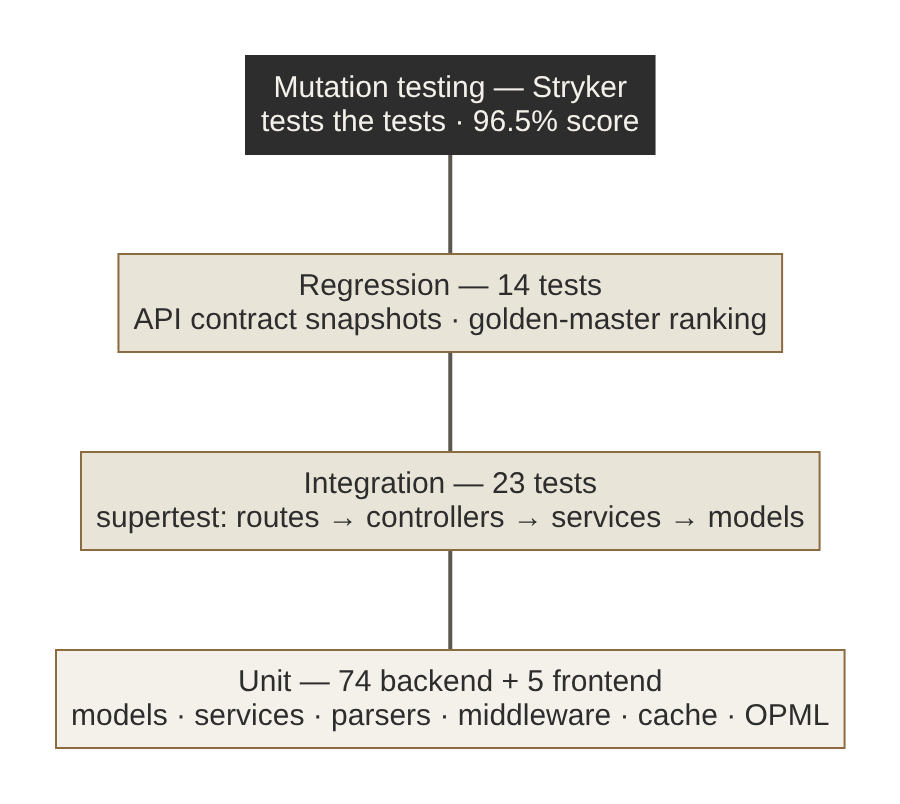
Figure 27 — Test pyramid, with mutation testing on top measuring the levels below.
Boundary-value analysis. Risk thresholds at 19/20, 39/40 and 69/70 and the cap at 100; the risk floor of 5%; the 7-day incident window, exactly at the limit and one second over; getDaysInBacklog never below 1; team utilisation capped at 100%.
Decision tables. Severity classification from title and body keywords (Table 9.3, TC-U-SR).
State-based testing. The task lifecycle: create → read (views +1) → update → comment → delete → 404 on every verb.
Error guessing and fault injection. Network failure for each parser and the risk service; one failing publisher among several; Redis unavailable; malformed JSON body.
Golden master and contract snapshots. Used for the regression pack.
9.3 Test cases (representative)
ID
Unit under test
Input / condition
Expected result
Result
TC-U-T1
Task constructor
Only title and description
TO_DO, SHOULD_HAVE, 3 points, “Unassigned”, id TASK-dddd
Pass
TC-U-T2
Task.getDaysInBacklog
Created now; created 4.2 days ago
1; 5 (rounded up, never below 1)
Pass
TC-U-B1
BacklogItem.getMoscowWeight
MUST, SHOULD, COULD, WONT, unknown
2.5, 1.8, 1.2, 0.5, 1.0
Pass
TC-U-SB1
SmartBacklogService
views 10, comments 2, 4 days, 5 points, MUST
(15 + 8 + 25·ln 5 + 6) × 2.5
Pass
TC-U-SB2
SmartBacklogService
Negative view weight
Score clamped to 0
Pass
TC-U-SB3
getRankedBacklog
Low, high and mid tasks in that order
HIGH, MID, LOW, non-increasing
Pass
TC-U-SR1
SprintRiskService severity
“major” / “outage” / body “major outage”
CRITICAL (30)
Pass
TC-U-SR2
SprintRiskService severity
“degraded” / “partial” / body “incident”
HIGH (20)
Pass
TC-U-SR3
SprintRiskService thresholds
Weights summing to 15, 20, 40, 70, 120
LOW, MEDIUM, HIGH, CRITICAL, capped at 100
Pass
TC-U-SR4
SprintRiskService window
Incident exactly 7 days old, and 7 days + 1 s
Counted, not counted
Pass
TC-U-SR5
SprintRiskService fallback
Feed unreachable
18%, LOW, two past incidents, “(Resilience Fallback Mode)”
Pass
TC-U-PAR1
RssParser
Full RSS item
Normalised IFeedItem, ISO date, feedType RSS
Pass
TC-U-PAR2
AtomParser
Entry with summary and updated
Content from summary, date from updated, ATOM
Pass
TC-U-PAR3
Rss/AtomParser
Network error
Resolves to [] without throwing
Pass
TC-U-FAC
FeedParserFactory
ATOM, .atom, /atom, RSS, .rss, /feed, AUTO
AtomParser × 4, RssParser × 5
Pass
TC-U-MW
authenticateJWT
No header; Basic; forged; expired; valid
401; 401; 403; 403; next() with req.user
Pass
TC-U-C1
CacheService
Redis down; set, get, TTL expiry
Value round-trips; null after TTL
Pass
TC-I-TASK
/api/tasks (CRUD)
Create → get ×2 → update → comment → delete
201; views +1; partial update; 201; then 404 on every verb
Pass
TC-I-DI
/api/smart-backlog + /api/team
New task with 80 views and 20 comments; reassignment
Ranked first; member workload updated
Pass
TC-I-FEED
/api/feed pipeline
Cold cache, then a second call; one source failing
ON_DEMAND_HARVEST, newest first; then CACHE_HIT with no refetch; 2 of 3 sources still served
Pass
TC-I-AUTH
/api/auth/*
Register, duplicate, bad login, login, /me with and without token
201 (no hash in body); 409; 401 with identical messages; 200; 200 / 401
Pass
TC-R-01
All endpoints
GET on 9 routes
Status and response shape match snapshot
Pass
TC-R-02
Seed backlog
GET /api/smart-backlog
Order 102, 104, 101, 103, 105, 106
Pass
TC-R-03
Edge behaviours
storyPoints 0; utilisation over 100%; malformed JSON
3; capped at 100; handled error with success: false
Pass
TC-F-OPML
generateOpmlXml
Title Tom & "Jerry's" <feed>
All five XML entities escaped; valid OPML 2.0
Pass
9.4 Test doubles
Double
Replaces
Used by
rssParserMock
The rss-parser network client, with a programmable parseURL
Parser, risk service, integration and regression tests
prismaModuleMock
The Prisma client, backed by an in-memory users array
Integration and regression tests (auth)
cacheModuleMock
The Redis CacheService, backed by a Map
Integration and regression tests (feed)
Fake timers
The system clock
TTL expiry and 7-day boundary tests
9.5 Exit criteria
All unit, integration and regression tests pass in CI.
Mutation score is at least 60% (break threshold). The target band is 70–85% or above; achieved: 96.49%.
Every surviving mutant is either killed or documented as equivalent (§1.5).
The backend type-checks (tsc) and the frontend builds. The compose stack builds.
Appendix A — Software Requirements Specification
A.1 Purpose and scope
This SRS specifies Scrollhalla, a web-based RSS/Atom e-reader with a Reels-style reading feed. It is delivered as a
React SPA and a REST API, deployed with Docker Compose. Out of scope for this release are full offline support, native
iOS/Android apps and AI-generated summaries (the Won't Have items in DA1).
A.2 Overall description
Users: the Reader (Deep Thinker and Curator personas) and the Admin/DevOps role. A cron scheduler and external publishers are system actors.
Operating environment: a modern browser (desktop and mobile), Node.js 20, PostgreSQL 15, Redis 7, and Docker.
Constraints: deployable with Docker Compose; configuration only through environment variables; no secrets committed.
Assumptions: users have standard RSS/Atom URLs or use the in-app directory; publishers serve valid XML over HTTP(S).
A.3 Functional requirements
ID
Requirement
Priority
Story
FR-1
The system shall let a user register and log in with email and password, store a bcrypt hash, and issue a JWT valid for 7 days.
Must
#19
FR-2
The system shall reject protected requests without a valid Bearer token (401 when missing, 403 when invalid or expired).
Must
#19
FR-3
The system shall provide onboarding where the reader enters a profile, selects interest tags and chooses seed channels.
Must
#3
FR-4
The system shall parse RSS 2.0 and Atom 1.0 feeds into one normalised article format.
Must
#14
FR-5
The system shall harvest all subscriptions every 15 minutes and cache the merged, newest-first timeline for 30 minutes.
Must
#13, #15
FR-6
On a cache miss, the system shall harvest on demand. A failing publisher shall not prevent the other publishers' articles from being served.
Must
#15
FR-7
The system shall present the timeline as a vertical, one-card-per-article scroll with read time, and Like, Save, Read, Share and Open actions.
Must
#4, #7, #8, #18, #25
FR-8
The system shall provide a full-screen reader view with adjustable font size.
Should
#12, #17
FR-9
The system shall list bookmarked articles with search and removal, and show an empty state when there are none.
Should
#9, #24
FR-10
The system shall offer a categorised feed directory and subscription by custom URL.
Should
#10, #11
FR-11
The system shall export subscriptions as OPML 2.0 with XML-escaped fields.
Could
—
FR-12
The system shall offer Warm Paper and E-Ink Dark themes.
Could
#5
FR-13
The system shall let a user remove a subscription.
Should
#16
FR-14
The system shall rank backlog items by views, comments, age, story points and MoSCoW weight (Smart Backlog).
Should
—
FR-15
The system shall compute a 0–100% sprint risk score from the GitHub status feed, with an offline fallback.
Could
—
A.4 Non-functional requirements
ID
Category
Requirement
Verification
NFR-1
Performance
Timeline API responds in under 500 ms when the cache is warm.
Measured 0–2 ms (Fig. 23)
NFR-2
Availability
If Redis is unavailable, the system degrades to an in-memory cache instead of failing.
TC-U-C1
NFR-3
Security
Passwords are never stored or returned in plain text. Login errors do not reveal whether an account exists.
TC-I-AUTH, TC-R-03
NFR-4
Usability
Warm paper palette (#F4F1EA / #2D2D2D); one primary action per screen; navigation within thumb reach on mobile.
Fig. 16–22
NFR-5
Portability
The whole stack starts with docker compose up. All configuration comes from the environment.
CI docker job
NFR-6
Maintainability
Adding a feed format needs no change to callers. Mutation score stays at or above 60% in CI.
TC-U-FAC; Stryker gate
NFR-7
Interoperability
Subscriptions can be exchanged with other readers through OPML 2.0.
Review 3 takes Scrollhalla from an untested codebase to one with a four-level automated test suite of 116 tests,
92% line coverage and a 96.5% mutation score, enforced by a CI pipeline that builds and tests every push. Mutation
testing was the most informative of the levels. Besides measuring the suite, it found dead code in the parser factory
and three blind spots that coverage figures had hidden. The system builds and runs end-to-end on PostgreSQL and
Redis with live feeds. Twenty of twenty-three user stories are complete, and the remaining three are recorded with
their current state.